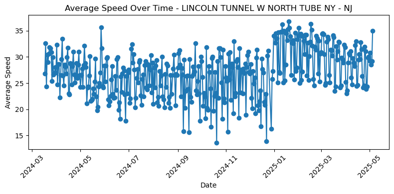
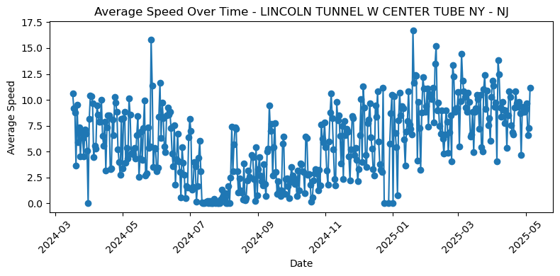
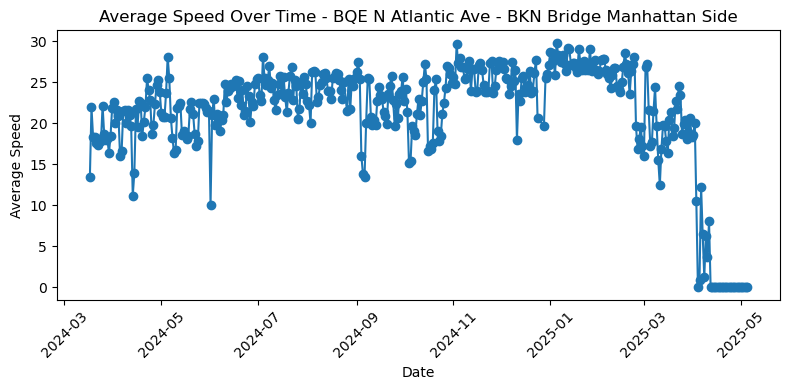

The question
On Jan 5, 2025, NYC began charging most vehicles that enter Manhattan below 60th St. With a partner, I measured how road speeds, crossing volumes, and subway ridership changed around the launch.
The data (Mar 2024 – May 2025)
- MTA congestion-zone entries by detection point
- MTA bridge & tunnel crossings (E-ZPass + tolls by mail)
- MTA subway ridership: daily (2024), by station (2025)
- NYC DOT real-time traffic speeds by road segment
Approach
- Cleaned and aggregated with pandas: daily totals and averages by crossing, station, and road segment, including daily average speeds for 9 bridge-approach road segments.
- Mapped MTA plaza codes to bridge/tunnel names; used regex to pull subway lines from station names.
- Parsed raw coordinate strings into road geometry and built a GeoJSON time series.
- Plotted speed trends per segment and built an interactive folium map with a day-by-day time slider, colored red → green by average speed.
What we found
- Lincoln Tunnel speeds rose after pricing began. The westbound north tube went from mostly mid-20s mph to the low 30s.
- Not every drop was traffic: we concluded a broken tunnel sensor caused the stretch with no readings in the Lincoln Tunnel west center tube (summer 2024). The data also showed BQE segments falling to 0 mph in April 2025 and an MDE/RFK segment reading 0 the whole period, signs of sensor problems rather than real stoppages.
- We presented our findings with policy recommendations for urban transportation planning.


